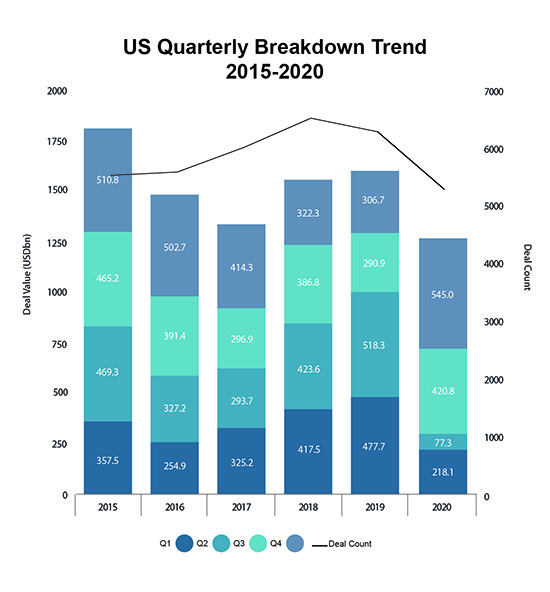
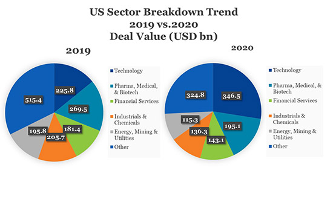

2020 brought the COVID-19 pandemic and other headline-grabbing challenges, along with “the usual” quadrennial questions around the U.S. election. Early in the year, businesses and dealmakers focused on the pandemic and revised their strategies as understanding of its impact evolved. The M&A market, like the overall economy, was hit hard, before rebounding later in the year.
In this alert, we look at some of the ways M&A changed in 2020, particularly those changes likely to continue into 2021.
Deal Activity Rebounds Quickly
Unsurprisingly, M&A activity reached record lows in early 2020, as the pandemic encircled the globe and companies acted to protect their personnel and businesses and faced an unprecedented reality of closures, social distancing and other restrictions. Companies reacted quickly though, getting back to potential deals that had been put on hold and moving on new deals. Dealmakers applied new tools and processes to an almost exclusively remote work environment. Globally, after falling 25% in the second quarter compared to the first quarter, M&A activity rose 90% in the second half of the year, ending the year with only a 3% decline in volume from 2019.[1]
In the U.S., deal value likewise jumped back in the third quarter and even more in the fourth quarter, but didn’t make up for the drop in the second quarter; deal value for the year ended up down 21%. Reflecting a potential impact of the pandemic, acquisitions out of bankruptcy rose 59% by value. [2]

Graphic provided by MergerMarket
In Europe, deal value rose. In Japan, outbound M&A fell, but domestic deal value increased 60%, reflecting a number of large deals. The Asia market (excluding Japan) experienced the largest overall gains, with deal value increasing 26%. Cross-border activity slumped, down 14.2% over 2019, as travel restrictions changed dealmaking logistics and countries acted to protect their borders.[3]
Private Equity Deploys Capital
While the private equity market experienced a short jolt early in the year, the industry posted record numbers in the second half, finishing the year with the highest annual value since the global financial crisis.[4] As we covered in last year’s Key M&A Trends alert, private equity firms entered 2020 with record levels of cash on hand, which allowed them to look for opportunities in the midst of a tumultuous market. A more detailed look at PE trends is provided in our Global PE Trends 2020 and Outlook for 2021.
Tech Activity Rises
Technology was the winning sector for M&A activity in 2020, dominating market share as the world moved into an online environment. Globally, the Technology, Media and Telecommunications (TMT) sector clocked $850 billion in deal value in 2020, almost twice that of the next best sector, Energy, Mining and Utilities ($480 billion). In the U.S., Technology, the only sector to grow in value over 2019, was the most active sector, followed by Pharma, Medical and Biotech.

Data provided by MergerMarket
While 2020 proved, even more than most years, that nobody can predict the future, we expect many of 2020’s M&A trends to continue into 2021. Much attention is focused on the pandemic, including the impact of vaccines, and questions also remain about the change in the U.S. administration and other issues. But equity markets are at record levels, PE dry powder remains plentiful (even without counting the surge in SPACs, as described below), debt is available, and acquirors are looking to strengthen their businesses and deploy their cash.[5]
Learn more about Morrison & Foerster’s Global M&A Practice.
1. M&A Deal Terms Evolve in Response to the Pandemic
“Many buyers requested additional reps and warranties, and target companies expanded their related disclosures, to address the various disruptions resulting from the pandemic.
As economies, businesses and governments responded to the pandemic, buyers and sellers scrutinized existing agreements, looking to avoid the unexpected. Some pending deals, particularly those signed before or in the early days of the pandemic, headed into court – most of those settled, with deals recut or abandoned. Terms in new agreements evolved in response, with some changes likely to remain in agreements long after the pandemic recedes.
- Material Adverse Effect (MAE) clauses. While a buyer still must clear a high bar to show that a MAE has occurred, many sellers sought to exclude consideration of the effects of the pandemic altogether, by reference either to the pandemic directly or to more general events. Buyers that accepted such carveouts often sought to carve the pandemic back in to the extent it had a disproportionate effect on the target company, raising questions of relative measurement.
- Covenant to Operate in the Ordinary Course of Business. Sellers sought flexibility to take potentially dramatic steps with respect to their businesses, while buyers continued to want to limit the changes a target could make and still require a buyer to close. A Delaware court opined that a covenant in one agreement to operate only in the ordinary course, consistent with past practice, without more, did not allow a company to take unusual actions even if they were “ordinary responses to extraordinary events,” while a court in Canada found that a covenant to operate in the ordinary course (defined to include consistent with past practices), in the context of the overall agreement, allowed for such actions in response to “systemic challenges that the pandemic posed for the entire economy,” at least where the changes did not fundamentally change the nature of the business or impose long-term obligations.[6] Parties now are negotiating more detailed provisions, depending on time expected to closing and other factors.
- Reps and Warranties. Many buyers requested additional reps and warranties, and target companies expanded their related disclosures, to address the various potential disruptions resulting from the pandemic, including with respect to labor and employment, stimulus funds and tax matters, relationships with customers and suppliers, material contracts and collectability of accounts receivable. Parties also wrestled with materiality and knowledge qualifiers and bring-down conditions.
- Regulatory Approvals and Termination Dates. Many regulators are operating remotely and with reduced staff, resulting in longer turnaround times. Parties have responded by agreeing to longer outside dates and, in some cases, automatic extensions if the relevant party has been using specified efforts.
- Structure of Consideration. More parties are considering earnouts, additional holdbacks and other mechanisms to address increased uncertainty in potential performance. Some parties have used stock as an acquisition currency to help address overall stock market volatility, where the parties, because of their respective industry positions or other characteristics, expected they might have similar exposure to and potential for impact from the pandemic and other systemic changes and thus might experience similar market valuation changes.
2. Deal Process and Prep Go Remote
The pandemic virtually eliminated in–person meetings. Buyers and sellers moved quickly to adapt their diligence and other deal processes. Parties strove to understand technology solutions for remote diligence, conferencing and other logistics (not to mention the new dress codes). Deal processes are unlikely to return completely to the pre-pandemic “normal.”
- Expanded Due Diligence. Buyers are looking further into supply chains, employee health, insurance coverage and other aspects of a target company likely impacted by the pandemic.
- Remote Working. Deals are being completed, and increasingly sourced, virtually, with greater use of virtual data rooms and virtual meetings, bringing increased attention to data security, privacy and related issues.
- Rep and Warranty Insurance. Insurers’ approaches to coverage for pandemic risks are still evolving and may vary depending on the extent to which a company appears vulnerable to the pandemic (due to, for instance, the nature of its industry). While initially excluding coverage of the pandemic, some insurers are now writing policies, but interested parties should allow additional time for heightened diligence by underwriters and for negotiation of the terms of coverage.
3. Government Stimulus Programs Provide Lifelines and Potential Liabilities
The federal government took unprecedented steps to support businesses and, in particular, their employees, resulting in potential liabilities that must be addressed in acquisition agreements. Chief amongst these was the Paycheck Protection Program (“PPP”), created in March by the Coronavirus Aid, Relief, and Economic Security Act (the “CARES Act”) and extended in the stimulus package signed on December 27. The PPP provides loans, principally to small businesses, that, in the right circumstances, are forgiven without repayment – but otherwise must be repaid.
- Initial Loan. Borrowers must qualify as small businesses under Small Business Administration (“SBA”) regulations or have fewer than 500 employees whose principal residence is in the U.S. With limited exceptions, for purposes of calculating the number of employees, the borrower must include all affiliates under the SBA’s affiliation rules. Borrowers also must certify the “necessity” of the loan for continued business operations. For borrowers that had significant private equity backing or other access to capital at the time they applied, the basis for this certification may need to be reviewed.
- Forgiveness. Borrowers must meet specified conditions, including continued employment of staff and use of loan proceeds for payroll, rent or other eligible costs.
- Consents. SBA consent may be required for the acquisition of a PPP borrower, though lender consent only is required if the borrower submits its forgiveness application to the lender and establishes an interest bearing escrow account with the lender for the outstanding loan balance.
Potential buyers can address the first two items above via due diligence and reps and warranties. The consents, and any necessary escrow, must be incorporated into the agreement structure and pursued prior to closing. Especially in transactions where the purchaser’s diligence has raised cause for concern around PPP loan eligibility or the ability to obtain forgiveness of the loan, a purchaser can go a step further by requesting a special indemnity from the seller.
4. SPACs and de-SPACs Become Trendy (Again?)
2020 saw multiple headlines regarding special purpose acquisition companies (“SPACs”), reflecting marked growth in IPOs and de-SPAC transactions.
- SPAC IPOs. 248 SPACs launched IPOs, with an average IPO size of approximately $334 million, raising total gross proceeds of approximately $82.8 billion – more than four times 2019’s 59 SPAC IPOs, with an average IPO size of approximately $230.5 million and total gross proceeds of approximately $13.6 billion. The amounts raised reflect much larger buying power, given the propensity to attract other capital into deals via PIPEs and other mechanisms and the leverage applied in acquisitions.
- De-SPACs. For SPACs that completed their IPO in 2020, as of year-end, eight had completed de-SPAC transactions and 30 had announced de-SPAC transactions; 210 were still searching for targets, along with a number of 2019 SPACs that had not yet found merger partners.
- Pipeline. As of year-end, the SPAC IPO pipeline for 2021 is strong, with 69 SPACs that had publicly filed for, but not yet completed, an IPO as of year-end.
“Private company merger targets now may consider de-SPAC transactions a more practical transaction alternative.
While once considered principally as an option for less attractive IPO candidates, private company merger targets now may consider de-SPAC transactions a more practical transaction alternative. Part of the reason is the SPAC structure has evolved to create a much more competitive alternative to IPOs, providing the opportunity for greater certainty around execution, but, typically, at the cost of greater dilution and expense.
Given the amount of capital raised and the number of SPACs searching for targets, we expect to see significant de-SPAC transaction volume in 2021 and 2022. We also expect that targets may have some more leverage to negotiate favorable economics, particularly with SPACs nearing the end of their 18-24 month acquisition periods. The SPAC model may continue to evolve, requiring sponsors to put more of their capital and equity at risk. SPAC shareholders and regulators also are likely to take a closer look at proposed transactions and disclosures.
5. Antitrust Enforcement Continues to Focus on Big Tech
Antitrust scrutiny of technology companies reached a high pitch, as investigations of digital platforms culminated in major policy proposals and enforcement actions by the FTC, DOJ, state attorneys general (AGs), private plaintiffs, and competition authorities around the world.
- U.S. Landscape. In the U.S., wide-ranging probes into potential anticompetitive conduct by digital platforms led to lawsuits against some of world’s largest technology companies. For example, since October 2020, the DOJ and numerous state AGs have brought three lawsuits against Google. Technology companies also faced increasing actions from private plaintiffs, as illustrated by the recent lawsuit brought by Fortnite-developer Epic against Apple. On Capitol Hill, after grilling top executives, the House Judiciary Committee completed its Investigation of Competition in Digital Markets and called for stronger antitrust enforcement and restrictions on dominant platforms.
- Outside the U.S. Competition authorities (for example, in the EU, UK and Germany) continued to regulate aggressively the technology sector, in some cases promulgating new laws to address the unique issues presented by digital platforms. These broad regulatory tools are exemplified by the new draft Digital Markets Act and the Digital Services Act recently published by the European Commission.
“In the U.S., wide-ranging probes into potential anticompetitive conduct by digital platforms led to lawsuits against some of world’s largest technology companies.
- Enforcement Focus on “Killer Acquisitions.” A key area of focus for antitrust enforcers has been so-called “killer acquisitions” of nascent competitors (e.g., innovators or market disruptors). The idea that such acquisitions may violate the antitrust laws – or that a series of such transactions in high-tech industries can constitute monopolization – has been at the heart of landmark enforcements actions this year. In the policy space, the FTC ordered major technology companies to produce documents and information relating to all non-HSR-reportable transactions for the last 10 years. The study is intended to help the agency understand the competitive impact of these transactions, potentially informing future enforcement policy. Outside of digital markets, the U.S. antitrust agencies have recently alleged such conduct in Illumina/Pacific Biosciences (gene-sequencing) and Procter & Gamble/Billie and Edgewell/Harry’s (razors).
- Potential Expansion of HSR Info Requirements. The FTC has proposed expanding the definition of “person” under the HSR Act to include not only the buyer’s ultimate parent entity but also “associates” under common investment management authority within the same fund family. The amendments would require an acquiring party to (1) aggregate existing and to-be-acquired interests of the target across all such entities to determine whether a transaction is reportable and (2) provide detailed information for such entities in any HSR filings. This could significantly increase the volume and complexity of HSR filings for investment funds.
6. M&A Focused Activist Campaigns and Potential for Opportunistic Takeovers Affected by Pandemic Uncertainty
Overall shareholder activism was down significantly in the first three quarters of 2020 compared to 2019, primarily due to pandemic uncertainty. This downward trend was also seen in the number of campaigns launched with an M&A objective. However, the third quarter saw a sharp uptick in the number of M&A-focused campaigns, with 50% of all campaigns having an M&A objective.[7]
2020 also saw:
- Proliferation of Poison Pills. The collapse in equity values that occurred during the first few months of the pandemic made public companies more vulnerable to opportunistic acquisition and activist strategies. In response, companies increasingly adopted shareholder rights plans (aka “poison pills”) as protective measures. From March through July, 53 such plans were adopted, compared to just 23 in all of 2019.[8] We also saw companies preparing “on the shelf” plans (i.e., preparing to adopt, but not implementing, a draft plan) so they can act quickly in the event a specific threat materializes. Since equity values for many have normalized to pre-pandemic levels, the rate of plan adoptions has decreased, but companies remain on guard.
- Continued Convergence of PE and Shareholder Activism. The convergence of private equity and shareholder activism continued. On the one hand, PE firms continued to use more aggressive, activist strategies, such as making minority investments in public companies to force a dialogue with management. For example, PE firm New Mountain nominated three directors to the board of Virtusa, and Elliott and PE firm Veritas Capital reportedly partnered in a joint bid for Cubic Corp. On the other hand, activist investors continued to use traditional private equity strategies, such as investing through PIPEs and forming SPACs. Examples include Elliott Capital Advisors’ proposed acquisition of Aryzta AG and Pershing Square’s SPAC, which raised $4B -- a record SPAC.
- Proposed Rule Changes May Facilitate Activism.
- In September, the FTC proposed to exempt acquisitions from HSR reporting where the acquiror would not own more than 10% of the issuer’s stock (regardless of value) and does not have a competitively significant relationship with the issuer.[9] The proposal would eliminate the $94 million HSR filing trigger that serves as an early warning system for mid- and large-cap issuers, as such accumulations often trigger the current HSR filing threshold before hitting the Schedule 13D disclosure threshold (i.e., 5% of an issuer’s stock).
- In July, the SEC proposed to amend Form 13F to raise the reporting threshold for investment managers to $3.5 billion from the current $100 million. The SEC expects the amendment would eliminate Form 13F filings for nearly 90% of current filers, including many activist investors and hedge funds.
7. CFIUS Jurisdiction and National Security Actions Expand
Governments responded to the pandemic by shutting down national borders on a global scale. Governments also became more concerned with supply chains and sustainability, with particular focus on medical supplies. Even as cross-border M&A volume fell, governments focused on national security issues related to foreign investments.
CFIUS. The U.S. continued to implement the legislative expansion of authority of the Committee on Foreign Investments in the U.S. (“CFIUS”).
“Even as cross-border M&A volume fell, governments focused on national security issues related to foreign investments.
- Authority over Non-Control Investments.In addition to its traditional authority to review the acquisition by a foreign person of “control” of a U.S. business, CFIUS now can review non-control investments, if (1) the U.S. business develops “critical technologies,” functions as “critical infrastructure,” or collects or maintains “sensitive personal information” (referred to collectively as a “TID U.S. business”) and (2) the foreign investor obtains access to “material nonpublic technical information,” board membership or observer rights or involvement in substantive decision-making regarding the TID assets. The expanded CFIUS jurisdiction also covers the acquisition of certain real property that is in “close proximity” to certain sensitive U.S. military facilities.
- Mandatory Filings. In the past, parties could decide whether to submit a transaction for CFIUS review, though covered transactions not reviewed by CFIUS remained subject to CFIUS review and action after closing. Now, parties must file in advance with CFIUS for a covered transaction concerning (1) a U.S. business that develops critical technology that is subject to export controls or (2) the acquisition of a 25% or greater interest in a TID U.S. business by a 49% foreign government owned entity, unless the foreign investor is from Australia, Canada or the UK and qualifies for “excepted investor” status. Other covered investments remain subject to CFIUS jurisdiction and “voluntary” filings.
The increased jurisdictional scope of CFIUS and the mandatory filing requirement have resulted in a significant increase in the use of the CFIUS streamlined joint declaration process that allows for a 30-day review period rather than submitting a full joint voluntary notice that has an initial 45-day review period plus potentially an additional 45-day investigation.
Targeted Company and Human Rights Actions. In a (very) high-profile decision, CFIUS determined in August that TikTok and its parent company, China-based ByteDance, present national security risks and ordered TikTok to sell its U.S.-based business. This action occurred in parallel to the administration’s halted efforts to prohibit certain transactions with TikTok (and WeChat). Talks between TikTok and CFIUS are ongoing. Additionally, the Commerce Department added numerous Chinese companies to its Entity List following its determination that these companies were involved in human rights violations and abuses.
While the specific priorities of the new administration are not yet known, the heightened attention to national security, and the need for deal parties to prepare for contingencies, is expected to continue.
8. ESG Factors Increasingly Impact M&A and Activism
Accelerating a pre-pandemic trend, buyers and sellers are paying more attention to environmental, social and governance (“ESG”) factors, particularly those relating to climate change, privacy and diversity and labor practices. Such factors have gained prominence in corporate governance generally, as reflected in the Business Roundtable’s 2019 redefinition of corporate purpose to include commitments to customers, employees, suppliers and communities, as well as to shareholders. Activists and institutional investors, including Blackrock, Vanguard and State Street, have pushed boards to act on ESG measures, citing the long-term benefits to individual companies and to their own investors. New funds are being formed to invest in companies with high ESG attributes and in companies with specific missions. States and other regulators have imposed substantive and disclosure requirements, such as for board diversity. And consumers and shareholders continue to push for attention to ESG issues.
- Buyers, particularly those in public markets, may want to consider the impact of an acquisition on their own ESG profile; some buyers can use acquisitions to fill ESG holes or otherwise to improve their ESG profile. Buyers also may want to consider the potential reactions of a potential target company’s customers, employees and other constituencies of a perceived or actual change in purpose or other ESG factors. Accordingly, diligence lists increasingly include questions regarding ESG actions and verification, and buyers are adding representations and other ESG-related provisions to agreements.
- Sellers, too, may want to consider the impact of ESG factors, particularly where the target is mission driven and the seller expects the mission to be continued, and related implications for valuation. In some cases, sellers may wish to structure the acquisition in a way that preserves their mission following closing.
As ESG factors are incorporated into M&A playbooks, companies increasingly may want to consider, among other things, the following:
- Standards for Measurement. There is yet no uniform standard for measuring ESG actions generally. However, companies have used various means to describe their efforts, and regulators and other groups are working on standards that could be used to set and measure progress towards goals and allow comparability between companies.
- Specialized Corporate Forms. New corporate forms, such as the public benefit corporation, have been developed by some states and allow or require companies to focus on mission and other constituencies as well as return to shareholders. In some cases, the new forms may make it easier for a target company to reject an unsolicited acquisition proposal that does not include sufficient protections for the mission or other constituencies. The new forms, if continued after a closing, may be useful for preserving the purpose of a company; at the same time, the buyer should consider whether using such a form provides sufficient flexibility. The new forms should not be confused with certifications, such as the “B corp” certification, that may be available to companies organized under traditional forms.
- Fiduciary Duties. The boards of both the buyer and the seller must consider their fiduciary duties in connection with any M&A transaction. The public benefit corporation and some state laws expressly permit, or even require, a board to take into account interests beyond those of its shareholders.
9. M&A in Asia
- Continued U.S. Take-Private Activity by U.S.-listed Chinese Issuers. U.S.-China trade tensions and national security-related restrictions in the U.S. reached a crescendo in 2020. In December, the U.S. adopted the Holding Foreign Companies Accountable Act (“HFCA”), which requires public companies and their accounting firms to make audit papers available for inspection by the PCAOB or face delisting. While most de-listings under the HFCA would only occur after five years, it is anticipated that more Chinese issuers may pre-emptively delist in the U.S. as a result of the HFCA as well as the deterioration of broader U.S.-China relations. We anticipate private equity sponsors will continue to step in to help finance take private transactions to facilitate such de-listings.[10]
“Chinese companies are continuing to look to alternative jurisdictions such as Japan and Korea as targets and partners.
- China Looks to its Neighbors for Technology and Data Related Acquisitions. While the new administration in Washington may temper some of the more eye-raising optics of U.S.-China tensions, the trend of decoupling, including in TMT, healthcare and other data-intensive industries, is expected to continue. Chinese companies are continuing to look to alternative jurisdictions such as Japan and Korea as targets and partners. For example, in 2020, PingAn Insurance of China entered into joint ventures with Shionogi in Japan (rather than a U.S.-based pharma) to develop a data-driven drug discovery platform and build AI-enabled manufacturing and quality control systems.
- Southeast Asia M&A Poised to Grow. Despite fundraising difficulties for SE Asia PE/VC funds in 2020, investments by such funds in recent years have produced a number of growth stage companies and unicorns in the region, including in healthcare, data centers and other incumbent industries transformed by digitalization during the pandemic. As China experienced a few years ago, consolidation in the sector is expected. Furthermore, multinational corporations have been increasingly looking to SE Asia to diversify their supply chain, and at the time of publication, Singapore is coming out from its pandemic “circuit breaker” measures. We expect SE Asia to be an active destination for investments in 2021. These factors are expected to result in consolidation over the course of 2021.
[1] “Global Mergers & Acquisitions Review, Full Year 2020,” Refinitiv.
[2] “Global & Regional M&A Report 2020,” MergerMarket.
[3] “Global & Regional M&A Report 2020,” MergerMarket.
[4] “Global & Regional M&A Report 2020,” MergerMarket.
[5] These and other factors are reflected in the expectations of tech M&A dealmakers. Please see our survey results, “MoFo Survey: Tech M&A Leaders Overwhelmingly Bullish for 2021 Amid ‘COVID Comeback,’” released on January 12.
[6] AB Stable VIII LLC v MAPS Hotels and Resorts One LLC (Del. Ch. Nov. 30, 2020); Fairstone Financial Holdings Inc. v Duo Bank of Canada 2020 ONSC 7397 (Dec. 2, 2020).
[7] https://www.lazard.com/media/451406/lazards-q3-2020-review-of-shareholder-activism.pdf
[8] Deal Point Data.
[9] https://www.ftc.gov/news-events/press-releases/2020/09/ftc-doj-seek-comments-proposed-amendments-hsr-rules-advanced
[10] See our prior client alert, Coming Home – Overview of Going Private Transactions of U.S.-Listed Chinese Companies | Morrison & Foerster (mofo.com)